A reservations app for the Museo de Arte Contemporáneo (Universidad Nacional del Litoral, Santa Fe), designed end to end: interviews, personas, journey maps, storyboards, wireframes, two rounds of usability testing and high-fidelity mockups.
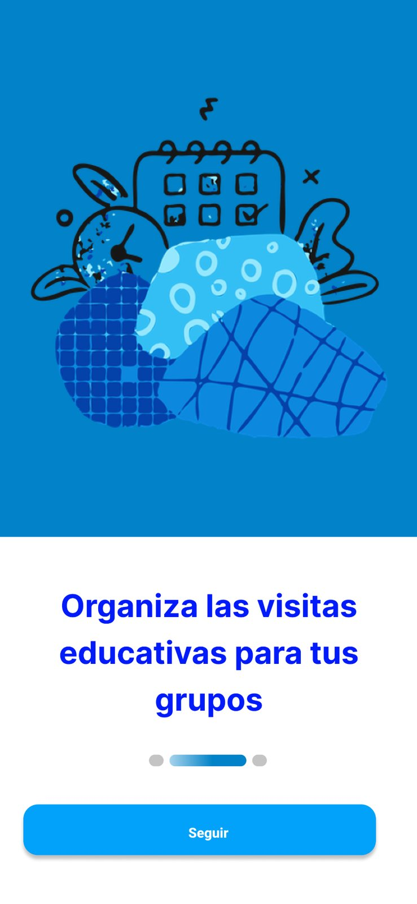
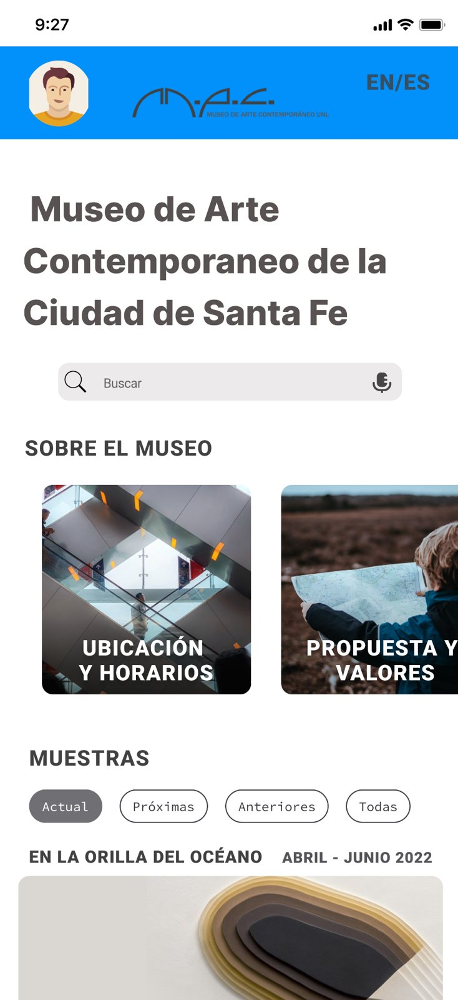
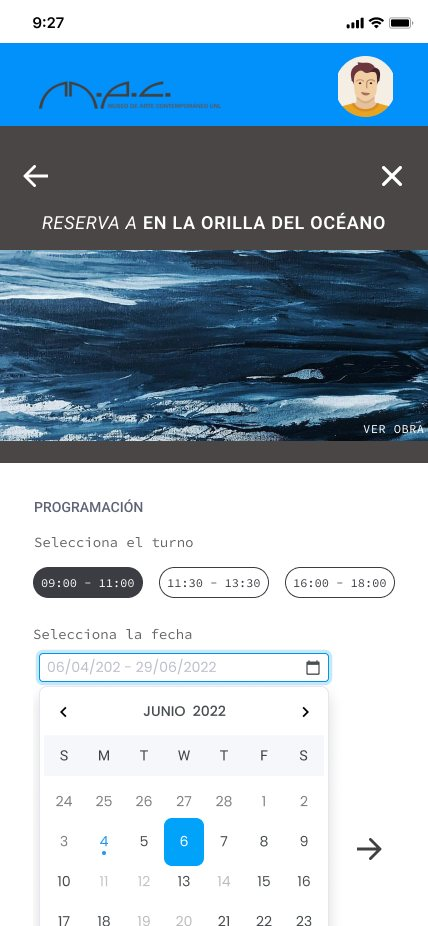
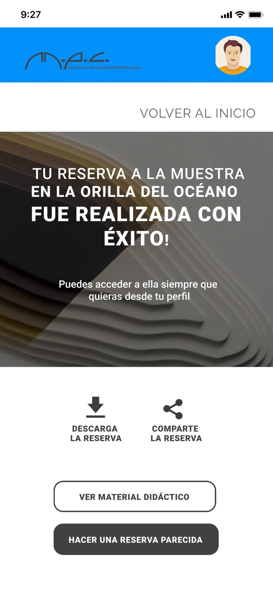
Teachers, coordinators and principals cannot complete the project they need to take students to the museum, because they do not have the information it requires. In Santa Fe, an outing needs a formal project tied to classroom content, approved by the school and then by supervision, with at least 30 days’ notice. The museum booked visits by phone.
Goal: get every piece of information the project needs while making the reservation.
Semi-structured interviews with teachers, school leaders, a social worker and museum staff surfaced five pain points: visits postponed by rain with no dates left, the logistics of large schools with many groups, being the ones who drive most visits, having to justify the visit from class content, and not knowing the space.
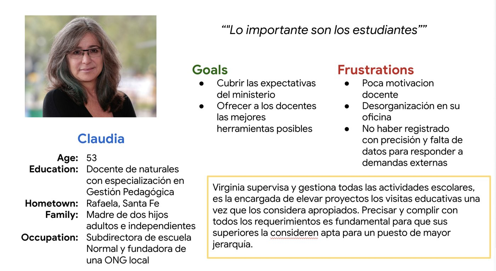
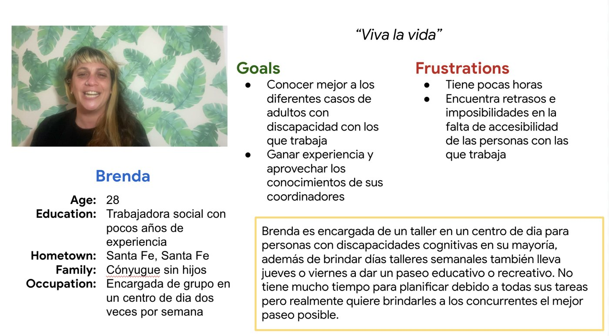
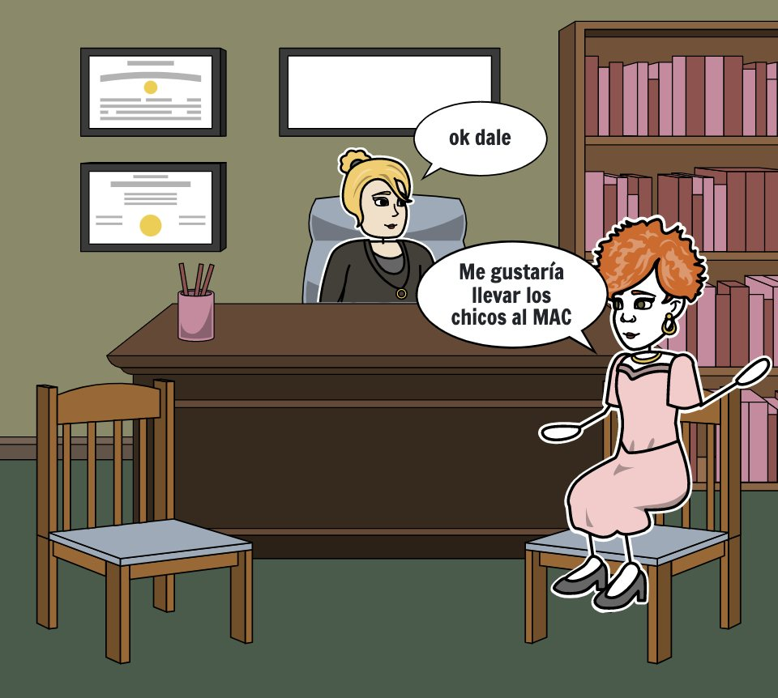
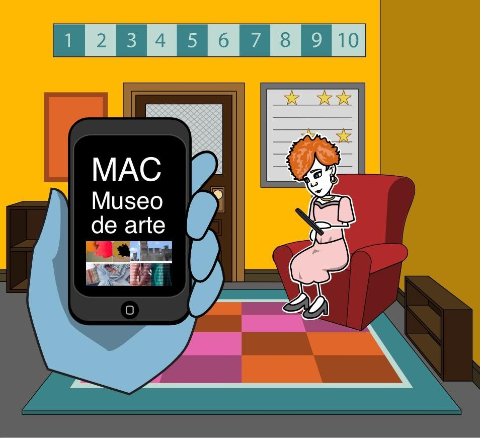
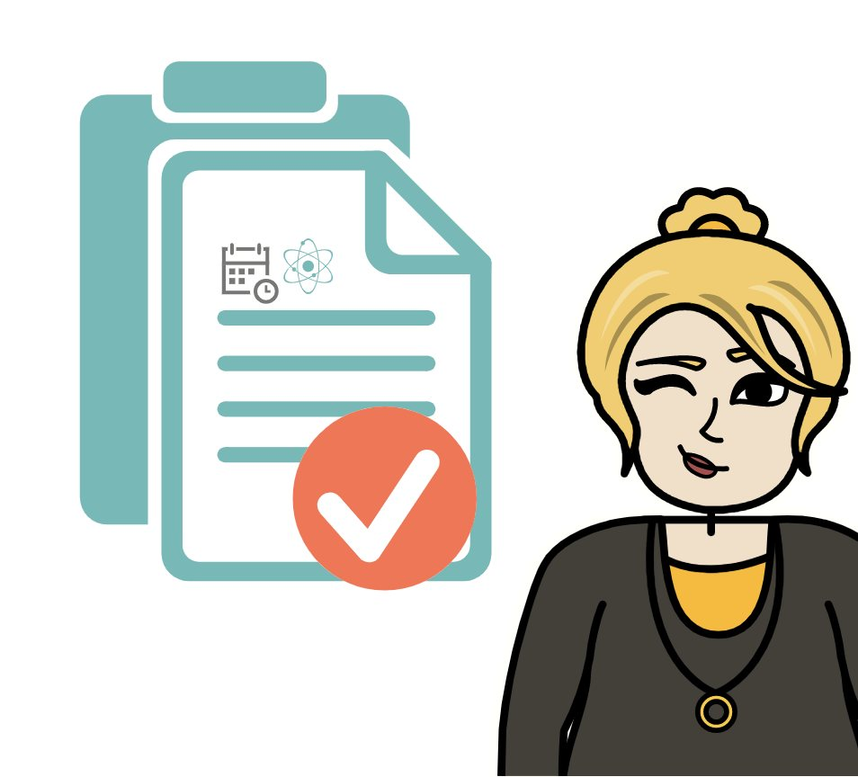
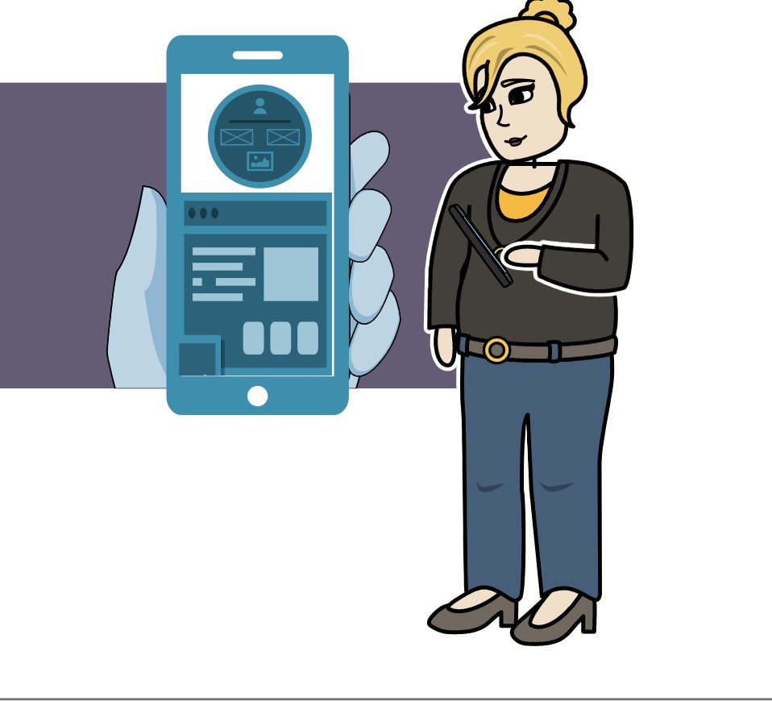
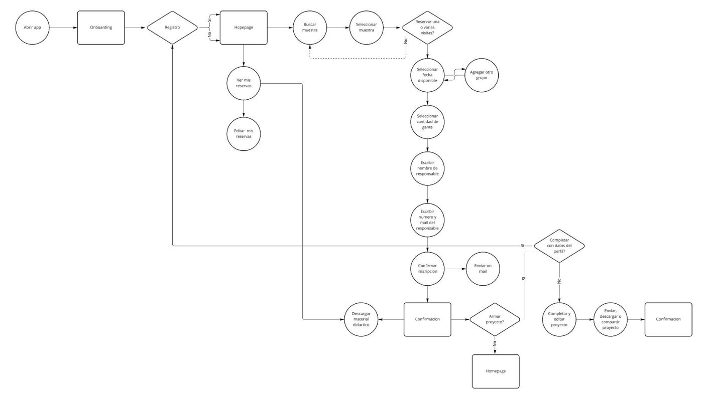
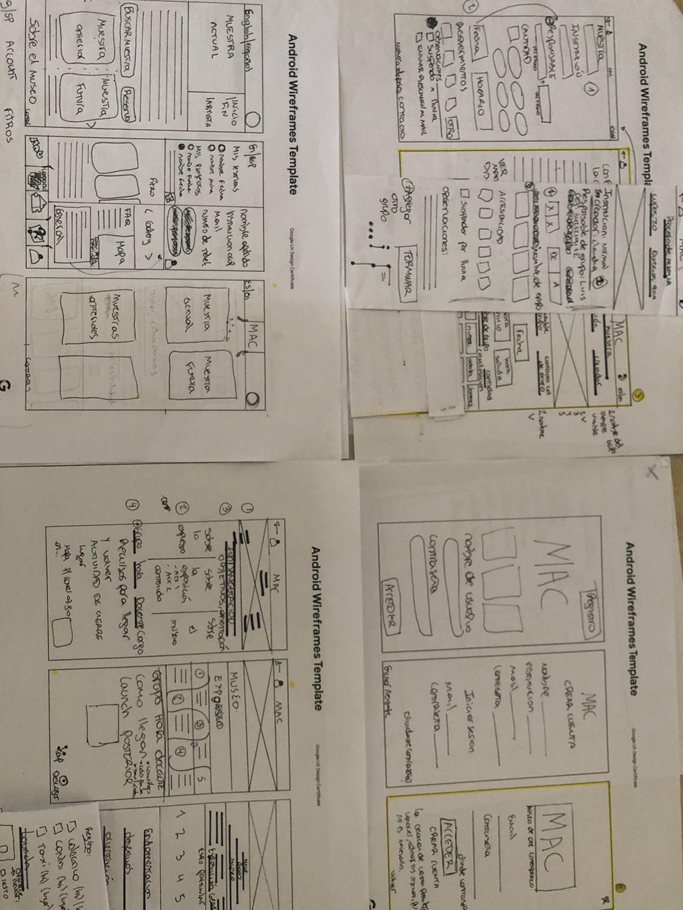
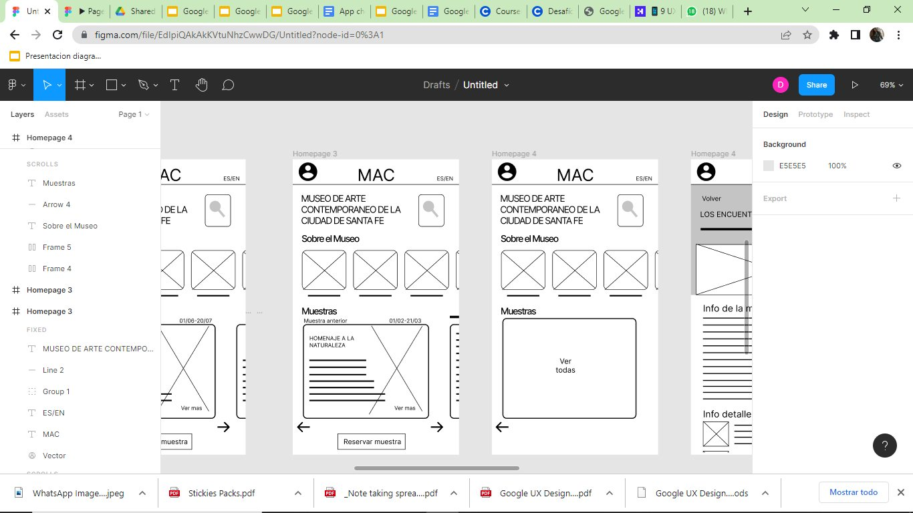
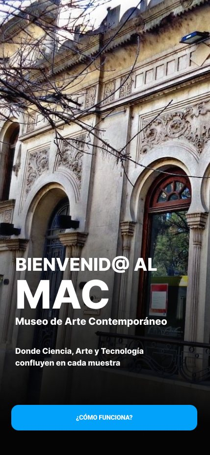
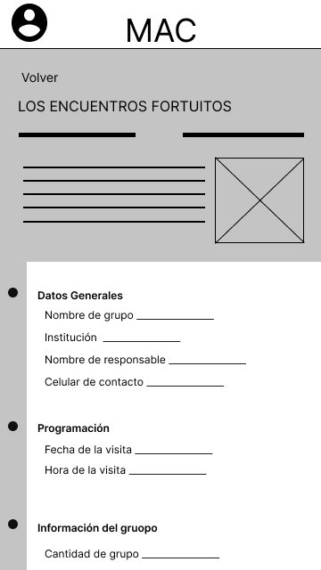
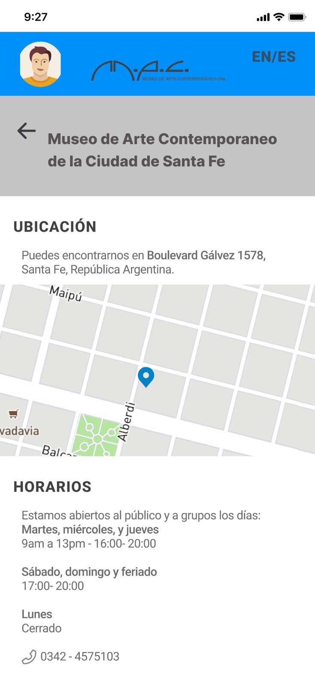
The app lets more people discover the museum and takes the phone bookings off the staff; because it is built for several similar reservations, a large school can book all its groups at once.